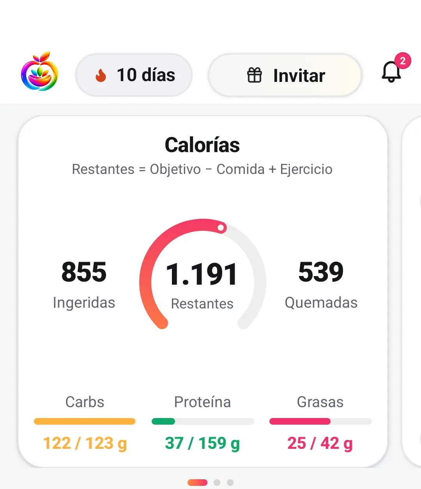
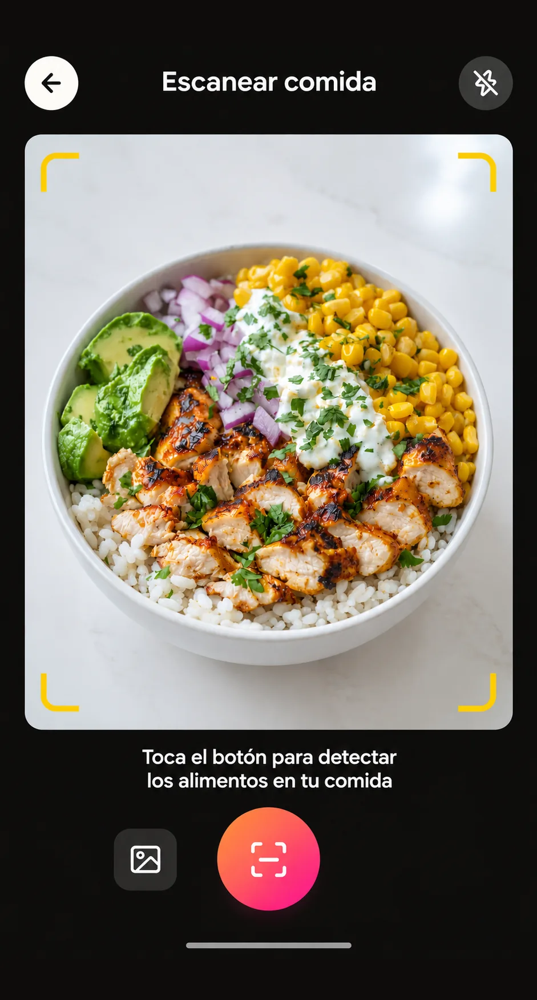
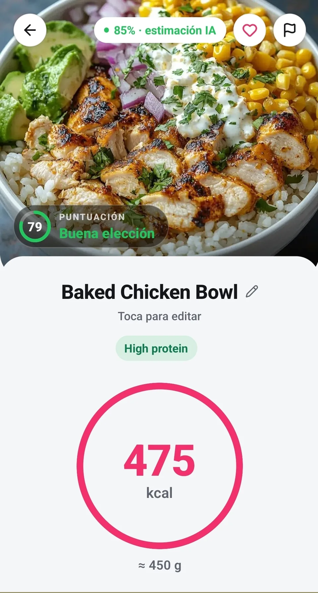
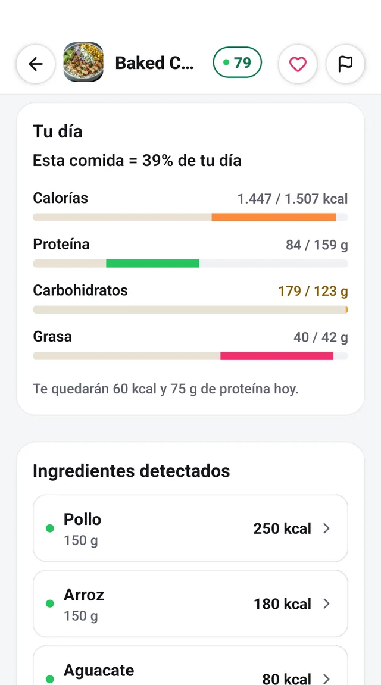
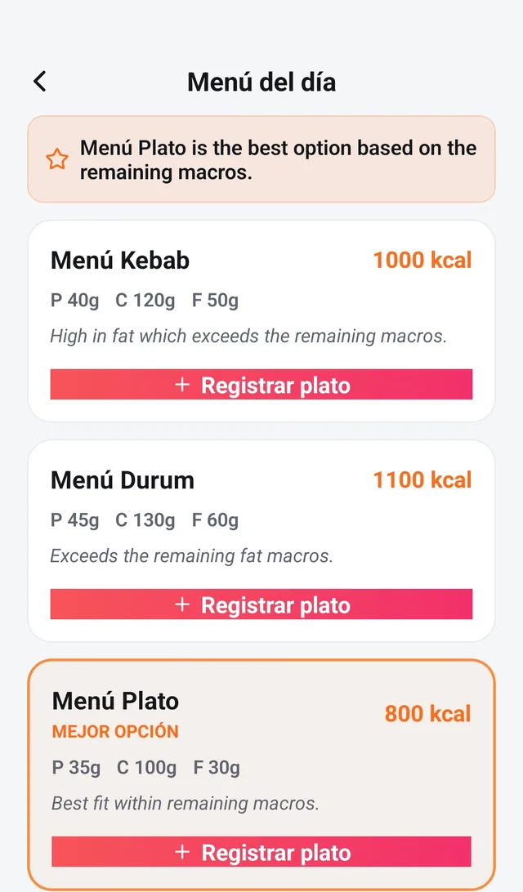
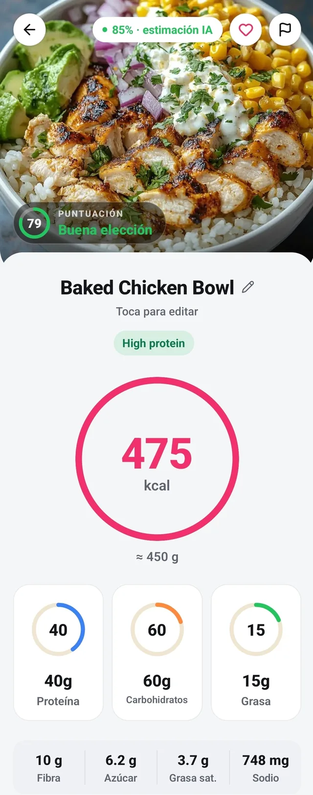
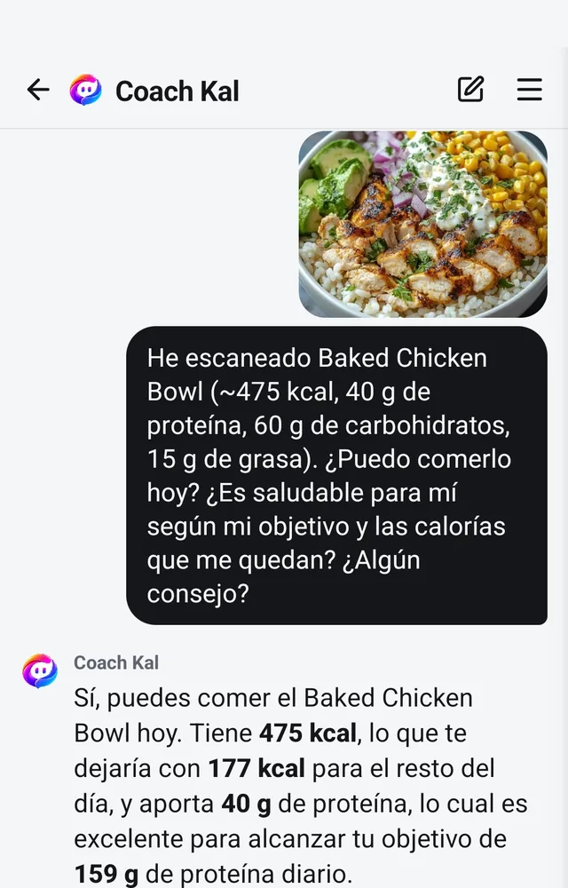
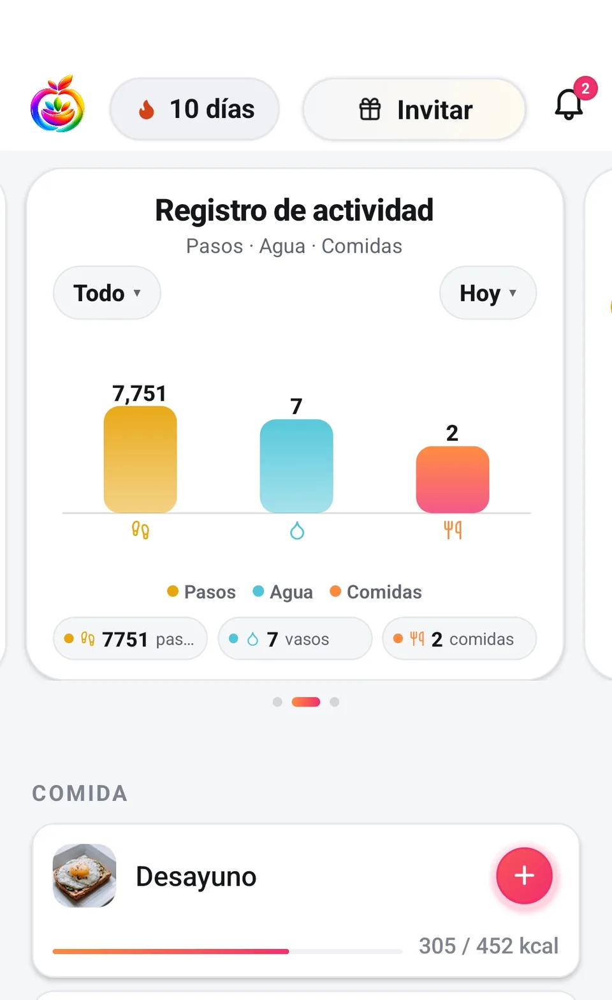
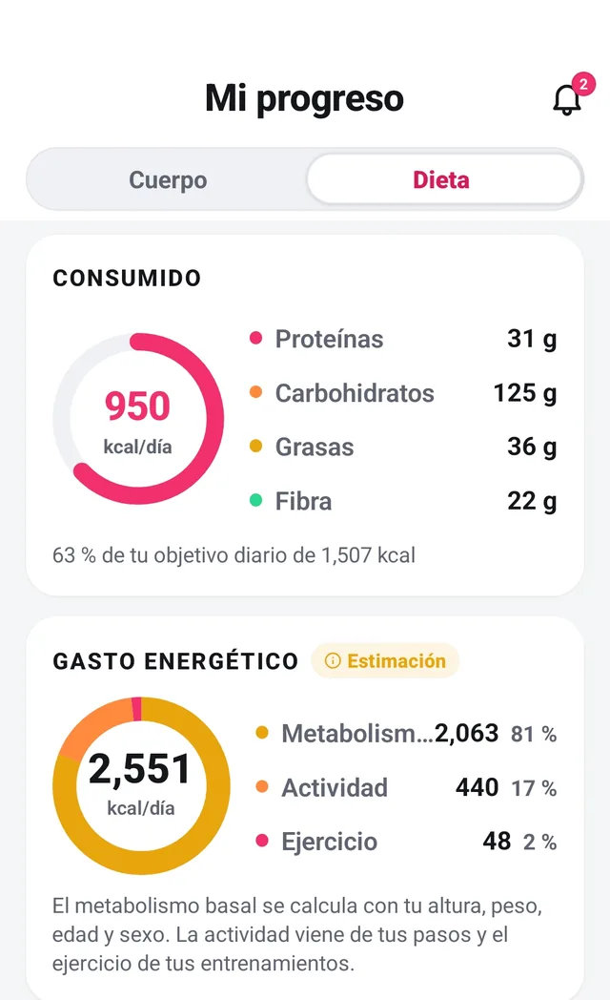

Una foto. Toda tu nutrición, al instante.
Haz una foto a tu comida y tendrás calorías, macros y puntuación de salud en segundos. Sin pesar nada.
Descarga gratuita · 5 días de prueba en el plan anual · Android
Sin compromiso: cancela cuando quieras y no pagas nada.
El precio completo, antes de descargar. Sin sorpresas dentro de la app.
Ver los planes →Elimina tu cuenta y todo lo que contiene desde la propia app, cuando quieras.
Tres pasos. Cero fricción.
Registrar una comida cuesta lo mismo que hacer una foto, porque no es nada más que eso. Estas son pantallas reales de la app.
-
Haz la foto
Abre Fotocal y fotografía tu plato. Casero, de restaurante o las sobras de ayer: funciona igual.

-
La IA lo lee
En segundos identifica cada ingrediente, estima la ración y calcula calorías, macros, micronutrientes y una puntuación de salud.

-
Queda registrado
La comida entra directa en tu diario y todo tu día se actualiza solo: calorías restantes, macros, agua, racha. Listo.

Regístralo a tu manera.
Foto, código de barras, carta o voz: Fotocal se adapta a ti. La forma más rápida en ese momento es siempre la correcta.
-
Foto
Fotografía tu plato
Una foto y la IA te devuelve calorías, macros y una puntuación de salud. Ajusta la ración o los ingredientes antes de guardar: tú siempre tienes el control.
-
Código de barras
Escanea la etiqueta
Apunta al código de barras de cualquier producto y obtén su nutrición completa más una puntuación de salud clara — sabrás si merece la pena antes de meterlo en la cesta.
Pantalla real de la app en la próxima sesión de capturas -
Voz
Solo dilo
«Dos huevos y tostada con aguacate»: dilo en voz alta y queda registrado. Perfecto para mañanas con prisa, manos ocupadas o salir por la puerta.
Pantalla real de la app en la próxima sesión de capturas -
Carta Premium
Escanea la carta
¿En un restaurante? Apunta con la cámara a la carta y ve las calorías estimadas de cada plato — pide con los ojos abiertos.


La imagen completa de cada comida
Las calorías son el titular, no la historia. Cada escaneo desglosa tus proteínas, carbohidratos y grasas, sigue las vitaminas y minerales que hay debajo y califica la comida con una puntuación de salud — más una sugerencia concreta para mejorarla.

Un coach con IA que de verdad conoce tu día
Coach Kal ve tus comidas, tu agua, tu peso y tus objetivos, así que sus consejos van sobre tu día real y no sobre un plan genérico. Pregúntale qué cocinar con lo que hay en la nevera, qué pedir en un restaurante o por qué la báscula no se mueve esta semana.
- Basado en tus datos
Consejos según lo que has registrado hoy de verdad, no un plan enlatado.
- A cualquier hora
Antojos a las 3 de la tarde o un «¿qué ceno?» a las 11 de la noche: Kal está despierto.
- Amable, no sermoneador
Respuestas prácticas y sin juzgar. Sin culpa y sin dietas extremas.
Las cosas pequeñas que te mantienen.
Los grandes cambios son hábitos pequeños repetidos. Fotocal hace que repetirlos sea la parte fácil.

-
Registro de agua
Registra cada vaso con un toque y mira cómo tu objetivo de hidratación se va llenando durante el día.
-
Rachas
Una racha diaria convierte el registro en un hábito que de verdad querrás proteger.
-
Recordatorios inteligentes
Un empujón suave justo cuando sueles olvidarte — nunca pesado, siempre a tiempo.
-
Nota diaria: ánimo y hábitos
Un minuto al día: cómo te sentiste, cómo dormiste, qué salió bien. Los patrones aparecen rápido.
-
Informes semanales
Una vez por semana: cómo quedaron de verdad tus calorías y macros, qué aguantó y una o dos cosas que probar.
-
Pasos con Health Connect
Tus pasos se sincronizan solos y cuentan en tu balance energético real de cada día.

Progreso que se ve de verdad
Registra tu peso en segundos y Fotocal lo convierte en una línea de tendencia que ignora el ruido diario. Tu TDEE — las calorías que tu cuerpo quema de verdad — se actualiza sobre la marcha, para que tus objetivos sigan siendo honestos mientras tu cuerpo cambia.
- Tendencias de peso por semanas, no por mañanas sueltas
- TDEE y objetivos de calorías que se adaptan a ti
- Gráficas limpias que se leen de un vistazo
Todo en una sola app — sin trampas de pago.
Así queda Fotocal frente a los contadores de calorías más conocidos, según las funciones que cada app documenta públicamente.
| Función | Fotocal | Cal AI | MyFitnessPal | Yazio |
|---|---|---|---|---|
| Escaneo de comida por foto con IA | ✓ | ✓ | Premium+ | ✓ |
| Código de barras + puntuación de salud | ✓ | ✓ | Premium | ✓ |
| Escaneo de cartas de restaurante | ✓ | ✗ | ✗ | ✗ |
| Registro de comida por voz | ✓ | ✓ | Premium | ✗ |
| Coach nutricional de chat con IA | ✓ | ✗ | ✗ | ✗ |
| Puntuación de salud + mejoras sugeridas | ✓ | ✗ | ✗ | ✗ |
| Micronutrientes (vitaminas y minerales) | ✓ | ✗ | Premium | Premium |
| Diario de ánimo y hábitos | ✓ | ✗ | ✗ | ✗ |
| Informe semanal de progreso | ✓ | ✗ | Premium | ✓ |
| Sincronización de pasos (Health Connect) | ✓ | ✓ | ✓ | ✓ |
| Español e inglés | ✓ | Mejor en inglés | ✓ | ✓ |
| Precio anual típico | €34.99 | ≈$44 | $79.99 | $47.90 |
Las funciones y precios de la competencia se basan en información pública (2026) y pueden cambiar. Por ahora Fotocal es solo para Android.
Preguntas, respondidas
¿Cómo de preciso es el escaneo por foto?
Fotocal usa modelos de visión con IA actuales para identificar la comida y estimar la ración, y funciona lo bastante bien como para que los números te sirvan de verdad en el día a día. Es una estimación, no una medición de laboratorio: los platos mezclados, los guisos y todo lo que va en capas o tapado por una salsa son los casos más difíciles. Siempre puedes corregir la ración o los ingredientes antes de guardar, y aun corrigiendo sigue siendo mucho más rápido que buscar en una base de datos.
¿Tengo que pesar la comida?
No. Estimar la ración desde la foto es justamente el objetivo. Si en una comida concreta quieres ser preciso puedes meter el peso a mano, pero nada te obliga.
¿Qué más puedo escanear además de mi plato?
Mucho más. Escanea el código de barras de un producto para ver su nutrición completa y una puntuación de salud clara antes de comprarlo, apunta con la cámara a la carta de un restaurante para ver las calorías estimadas de cada plato, o simplemente di en voz alta lo que has comido y Fotocal lo registra. Foto, código de barras, carta o voz: la que sea más rápida en ese momento.
¿Fotocal es gratis?
Descargar Fotocal es gratis, y Premium empieza con una prueba gratis de 5 días para que lo pruebes todo: escaneos con IA ilimitados, Coach Kal sin límites, informes semanales y todas las funciones premium. Si cancelas antes de que termine la prueba, no pagas nada. Después, Premium cuesta 6,99 € al mes o 34,99 € al año.
¿Cómo cancelo?
Las suscripciones las gestiona Google Play, así que se cancelan ahí: Play Store → tu perfil → Pagos y suscripciones → Suscripciones. Si cancelas antes de que terminen los 5 días de prueba, no se te cobra nada.
¿Qué pasa con mis datos?
Tus datos son tuyos. Nunca los vendemos y puedes eliminar tu cuenta y todo lo que contiene en cualquier momento.
¿En qué idiomas está la app?
En español y en inglés, tanto en la app como en esta web. Fotocal está construida primero en español, así que la experiencia en español es de primera — no una traducción pegada después.
¿Fotocal cuenta mis pasos?
Sí. Fotocal se conecta a Health Connect en Android, así que tus pasos se sincronizan solos y alimentan tu balance energético diario junto con tu TDEE.
Tu próxima comida puede contarse sola.
Descarga Fotocal y comprueba lo fácil que es comer mejor cuando la parte difícil es una foto. Los primeros 5 días de Premium van por nuestra cuenta.
Descarga gratis · 5 días de Premium de prueba · Android